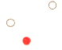
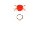

| 91. Кой кораб трябва да носи тези светлини?: |
|
Кораб с мех. двигател на ход с дължина по-малка от 50м Ветроходен кораб идващ срещу нас Кораб с мех. двигател на ход с дължина по-голяма от 50м Кораб зает с влачене |
| документ регламентиращ правилния отговор: COLREG (rule23/a) |
| 92. Кораб с мех. двигател на ход, с дължина по-голяма от 50 м. трябва да показва следните светлини: |
|
1.предна топова. 2.втора топова. 3.бордови. 4. кърмова. 1.една топова. 2.бордови. 3. кърмова. 1.една топова. 2.една бяла кръгововидима. 3.бордови. 4. кърмова. 1.предна топова. 2.втора топова. 3.бордови. |
| документ регламентиращ правилния отговор: COLREG (rule23/a) |
| 93. Кой кораб носи тези светлини?  |
|
Кораб с мех. двигател на ход с дължина по-голяма от 50м, движи се на ляво Ветроходен кораб идващ срещу нас Кораб с мех. двигател на ход с дължина по-малка от 50м Кораб зает с влачене |
| документ регламентиращ правилния отговор: COLREG (rule23/a) |
| 94. Кой кораб носи тези светлини?: |
|
Кораб с мех. двигател на ход с дължина по-малка от 50м Кораб зает с влачене Кораб с мех. двигател на ход с дължина по-голяма от 50м, движи се на дясно Ветроходен кораб идващ срещу нас |
| документ регламентиращ правилния отговор: COLREG (rule23/a) |
| 95. Кораб на въздушна възглавница, когато е в неводоизместващо положение, трябва да показва: |
|
Жълта кръгово-видима пробляскваща светлина в допълнение на светлините за кораб с мех. двигател на ход Червена кръгововидима пробляскваща светлина Зелена кръгововидима пробляскваща светлина Зелена кръгововидима пробляскваща светлина |
| документ регламентиращ правилния отговор: COLREG (rule23/б) |
| 96. Кой кораб носи тези светлини?: |
|
Ветроходен кораб, идва срещу нас Кораб зает с влачене, идва срещу нас Кораб на въздушна възглавница, идва срещу нас Риболовен кораб, идва срещу нас |
| документ регламентиращ правилния отговор: COLREG (rule23/б) |
| 97. Кой кораб носи тези светлини?: |
|
Кораб на въздушна възглавница, виждаме кърмата Ветроходен кораб, виждаме кърмата Пилотски кораб, виждаме кърмата Риболовен кораб, виждаме кърмата |
| документ регламентиращ правилния отговор: COLREG (rule23/б) |
| 98. Кой кораб носи тези светлини?:  |
|
WIG водолетателен съд, когато излита, каца и лети близо до повърхността Кораб на въздушна възглавница Пилотски кораб Риболовен кораб |
| документ регламентиращ правилния отговор: COLREG (rule23/d) |
| 99. WIG водолетателен съд, които излита, каца и лети близо до повърхноста, трябва в допълнение на светлините за кораб с мех. двигател да показва: |
|
Високо интензивна кръгововидима пробляскваща червена светлина Високо интензивна кръгововидима пробляскваща зелена светлина Високо интензивна кръгововидима пробляскваща жълта светлина Високо интензивна кръгововидима пробляскваща бяла светлина |
| документ регламентиращ правилния отговор: COLREG (rule23/d) |
| 100. Кой кораб носи тези светлини? |
|
Кораб на въздушна възглавница Пилотски кораб Риболовен кораб Кораб с мех. двигател на ход, с дължина по-малка от 7 м и скорост по-малка от 7 възела |
| документ регламентиращ правилния отговор: COLREG (rule23/c2) |